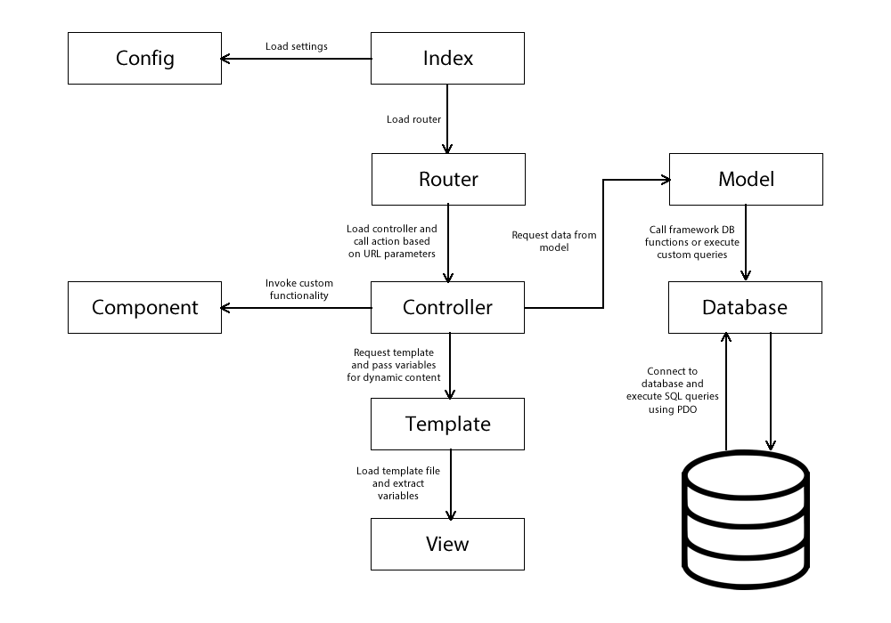
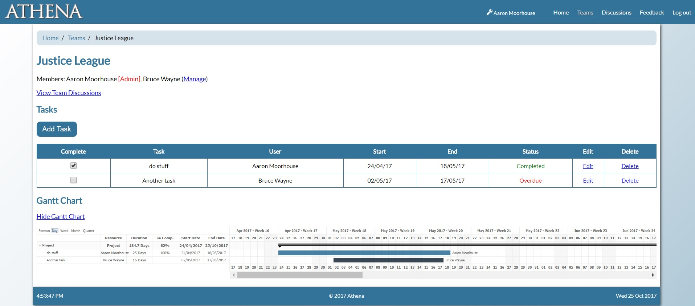

Profile
I am an all-round developer, specialising in object-oriented programming
Details
- Name: Aaron Moorhouse
- Age:
- Location: Huddersfield, UK
- Qualification: BSc (hons) Computing Science
I'm a computing science graduate from the University of Huddersfield and I even spent a year working there as a web developer/technical assistant. I have a good knowledge of object-oriented programming - Java and PHP being my most proficient languages.
I enjoy developing software from desktop programs to web applications. Maintaining quality and efficiency are usually my main priorities during development. I tend to work very well as an individual, however, I can also perform as part of a team. The best thing about team-based projects is being able to learn key skills from others. Infact, almost all of my knowledge of front-end web design I picked up during my placement year.
Education
"Education is the most powerful weapon which you can use to change the world."
Nelson Mandela
University of Huddersfield
(Sept 2013 - Jun 2017)
In 2017, I graduated from the University of Huddersfield with a first class bachelor's degree in Computing Science. During my time at university, I studied a wide range of modules, some of which involved interesting coursework projects. Details of the modules taken and the key projects worked on are specified below.
Year 1
Modules:
- Computing Science and Mathematics
- Hardware and Networks
- Project 1
- Software Design and Development
- Studio 1
Key Projects:
- Developing a multiplayer quiz game in Java involving multiple choice questions.
- Group project involving the documentation and development of an Android app which allows users to convert numbers to various different bases (e.g. decimal to binary, binary to octal etc.).
- Individually produced Android application for a chosen event (2014 World Cup), including information relevant to the event, demonstrating basic XML GUI design for simple Activities and Fragments.
Year 2
Modules:
- Algorithms, Processes and Data
- Computational Mathematics 1
- Object-Oriented Systems Development
- Operating Systems and Language Translators
- Relational Databases and Web Integration
- Team Project
Key Projects:
- Designing and developing a client-server system in C++ to simulate aeroplane black boxes sending data to a server in real time.
- Designing and building a relational database using MySQL and creating a simple PHP application to view and manage the database contents.
- Team project involving the development of a database-driven web application, allowing users to view and share cooking recipes.
Year 3
As the third year was spent doing a work placement, no significant modules were taken that year.
See Employment.
Year 4
Modules:
- Artificial Intelligence
- Computational Mathematics 2
- Distributed and Client Server Systems
- Individual Project
- Modern Database Applications
Key Projects:
- Implementing MATLAB functions to solve square systems of simultaneous equations using LU factorisation.
- Developing a real-time messaging application in Java using a tuple space to temporarily store unread messages.
- Developing software programs for components of a hypothetical security system using CORBA to allow client devices to communicate with each other and the server.
- Final year project/dissertation involved developing a PHP web application for aiding team management and communication built using a simple custom PHP framework, incorporating MVC principles - see Final Year Project.
Huddersfield New College
(Sept 2011 - Jun 2013)
In college, I studied A-Levels in Biology and Use of Mathematics, whilst also achieving a Level 3 BTEC Subsidiary Diploma in IT. I also achieved an AS-Level qualification in chemistry after deciding not to continue with the subject at the end of the first year.
Salendine Nook High School
(Sept 2006 - Jul 2011)
I left high school in 2011, achieving 10 GCSEs at grade A-C, including Maths, English, Biology, Chemistry and Physics.
Skills
"Every artist was first an amateur."
Ralph Waldo Emerson
Technologies
- Java
- Object-Oriented Programming
- PHP
- C#
- HTML
- MySQL
- Visual C++
- ASP.NET MVC
- CSS
- JavaScript
- jQuery
- XML
- Angular
- Magento
- ReactJS
Tools/Programs
- Eclipse IDE
- FileZilla
- Microsoft Office
- Notepad++
- PHPMyAdmin
- Windows
- Adobe Dreamweaver
- Adobe Fireworks
- Git
- IntelliJ / Android Studio
- Microsoft Visual Studio
- MySQL Workbench
- Ubuntu
- WinSCP
- XAMPP
- MATLAB
- Unity
Employment
"Choose a job you love, and you will never have to work a day in your life."
Confucius
Onstate Ltd | Junior Web Developer
(May 2018 - Oct 2018)
My first full time job after finishing my degree at university involved working as a junior web developer at Onstate Ltd in Leeds. My role there was mainly to work on support tickets for a range of clients, which involved fixing bugs, adding new features and general support tasks. Most of the time this was back-end PHP work or site configuration, but occasionally some minor front-end development was also required.
During my time at Onstate, I had the opportunity to extend my knowledge of various technologies in addition to learning about new ones. I gained experience of working with version control, including feature branching when multiple pieces of work were ongoing within the team. I also got to do development work locally using virtual machines as previously I only had experience developing using web server packages such as XAMPP. The main learning curve, however, was getting to grips with Magento, which is the main e-commerce platform/framework they use for most of their sites. My experiences with Magento involved installing/updating/configuring modules, creating/editing products via the Magento admin panel, setting up CMS pages and overriding third-party modules and templates to customise their functionality to suit the requirements of the client.
Working on tickets also helped my written communication skills by allowing me to respond to clients about raised queries, whether this was informing them a task has been completed, asking for further details about the inquiry or offering general support.
University of Huddersfield | Technical Assistant
(Sept 2015 - Aug 2016)
My placement year was spent working in the Learning Technology Support Unit in the School of Human and Health Sciences. My primary role involved working in a development team of two people, programming the back-end for database-driven PHP web applications. This also included creating the databases used by these applications and writing the queries to retrieve and modify the data.
The main project I worked on was the Peer Review of Research Applications Management System (PRRAMS). PRRAMS is a web application developed by myself and one other placement colleague, which allows research staff in the School of Human and Health Sciences at the University of Huddersfield to apply for funding for research projects. Users can upload proposals which can be approved or referred to management by a reviewer. Reviewers also must provide feedback afterwards. My role in the development of the site was to program the back-end in PHP and to build the MySQL database and write queries for retrieving/updating the data.
Other projects worked on include a podiatry clinic simulation game created in the Unity engine and an anagram quiz game in Flash.
Aside from web development, my secondary role was to respond to support queries from staff and students having problems using the Unilearn VLE.
Voluntary Work
"The best way to find yourself is to lose yourself in the service of others."
Mahatma Gandhi
Following the coronavirus pandemic, I decided to take some time to engage in voluntary work and employability courses to boost my confidence levels and gain some valuable work experience.
Projects
"I think it's good."
Ben Haigh
Below are some of the personal projects I have worked on both during and after university, including my final year project, the custom PHP framework it was build with and educational projects I've made to help me learn new technologies and skills.
CinderPHP | PHP MVC Framework
PHP

CinderPHP is a basic MVC framework I created during my time working at the University of Hudderfield. The intention was to create a solution that would help to make one of our main projects much easier to develop by reducing duplicated code, having a separation of concerns in terms of logic and having URL routing and templating systems, which would all contribute towards making the project much more easily maintainable for both us and any future placement students.
Routing
When an incoming request occurs from a client browser, the requested URL is processed by the router to determine which controller should be instantiated
and which action should be called. It will also check for any additional parameters, which would be passed as parameters when calling the controller function
for the specified action. For example, if the requested URL was '[root]/users/detail/1', it would instantiate UsersController and call the
detail() action, passing the '1' as the parameter.
Controllers
The controllers work by having a separate function for each available action/page related to it. Within these functions, you can specify functionality such as requesting data from the model, retrieving form data via POST request and passing data to the template to be displayed by the view.
It will also automatically create and store an instance of a model object, which is named using the same prefix as the controller (if such a class exists
within the 'models' folder). This means that the model can always be accessed by using $this->model without having to manually include
and create an instance of it. If you require access to other models besides this, the loadModel() function can fetch these for you.
Models for controllers are also optional, so if you do not want your controller to have an associated model (e.g. a controller for displaying static pages),
this can be avoided by simply overriding the super constructor of the parent controller class.
Data Access
In order to access data stored within a MySQL database, each controller can have an assigned model object as specified above. These model classes can contain functions which specify how to retrieve/send data to/from the database and how to process the result before it is returned to the controller. Generally, the controller would then pass the resulting data to either some other component function or to the template so that it can be displayed to the user via the view.
The framework includes a Database class, which all model object types have access to. This class contains various generic functions needed for
database CRUD (create, read, update, delete) operations. For more complex or obscure queries, there is a runQuery() function to allow you to manually
modify the query being run, which is useful if you need something more than a basic CRUD operation. This class uses PHP's built-in PDO interface to connect to and
query the database.
Templating and Views
The template object is in charge of searching for and rendering the correct template based on which controller action has been invoked and also storing all of the variables passed from the controller, which will be used within the view to display to the user.
The template's render() function will search for the required view file along with either the site's default header and footer or specific
ones for the given page if they exist and 'include' them. It will also extract the elements stored in the associative array of variables to be used within
view so that they can be accessed like regular variables in the view file. This function is invoked upon destruction of the controller object, ensuring it
is the last action that occurs before the page is displayed.
The views themselves are simply PHP files containing the HTML code for the front-end elements of the site with PHP code embedded where necessary for displaying any dynamic content.
Athena | Final Year Project
PHP, MySQL, JavaScript, HTML, CSS

My final year project involved developing a PHP application to facilitate task management and communication within teams. Users can create/join/manage teams, create/manage tasks and communicate via discussion threads.
An additional feature allows users to customise the website's colour scheme. The colour can be set to any RGB colour or one can be selected from a list of presets. This also affects the Gantt chart as tasks assigned to a specific user will appear in their chosen colour.
The back-end was developed in PHP using a simplistic MVC framework I had created previously and all HTML and CSS for the responsive front-end was written from scratch without frameworks.